简单 locke-treasure 逆向狂喜
1 2 3 4 5 6 7 8 9 10 11 12 13 14 15 16 17 18 19 20 21 22 23 void __fastcall decrypt_flag_to_buf ( const unsigned __int8 *enc, int enc_len, const char *key, char *out_buf, int out_buf_len) { int key_len; int i; j___CheckForDebuggerJustMyCode(&_68090DB3_calc_hide_c); key_len = j_strlen_0(key); if ( out_buf_len >= enc_len + 1 ) { for ( i = 0 ; i < enc_len; ++i ) out_buf[i] = key[i % key_len] ^ enc[i]; out_buf[enc_len] = 0 ; } else if ( out_buf_len > 0 ) { *out_buf = 0 ; } }
这是关键函数，key和enc均给了
（这道题好像只能静态分析，密码是abc123，但是却让输入纯数字）
exp：
1 2 3 4 5 6 enc=[0x7 , 0xe , 0x2 , 0x56 , 0x49 , 0x44 , 0x8 , 0xc , 0x3c , 0x59 , 0x53 , 0x40 , 0x9 , 0x3d , 0x1 , 0x48 , 0x42 , 0x52 , 0x12 , 0x11 , 0x1e ] flag='' key="abc123" for i in range (len (enc)): flag+=chr (ord (key[i%6 ])^enc[i]) print (flag)
智能门锁里的秘钥信息 打开二进制程序
看到敏感函数：
1 2 3 4 5 6 7 8 9 10 11 12 13 14 15 char *get_encryption_key () { _BYTE c4t_[11 ]; char _15_cut3_[17 ]; *(_QWORD *)&_15_cut3_[9 ] = __readfsqword(0x28u ); strcpy (&c4t_[5 ], "d0g3_" ); strcpy (c4t_, "c4t_" ); strcpy (_15_cut3_, "15_cut3!" ); strcpy (final_key_0, &c4t_[5 ]); strcat (final_key_0, c4t_); strcat (final_key_0, _15_cut3_); byte_4030 = 0 ; return final_key_0; }
提取出密钥d0g3_c4t_15_cut3!一般取前16字节
脚本如下：
1 2 3 4 5 6 7 8 9 10 11 12 13 14 15 16 17 18 19 20 21 22 23 24 25 26 27 28 from Crypto.Cipher import AESfrom Crypto.Util.Padding import unpadimport osdef decrypt_file (input_file, output_file ): raw_key_string = "d0g3_c4t_15_cut3!" key = raw_key_string.encode('utf-8' )[:16 ] iv = b'\x00' * 16 try : with open (input_file, 'rb' ) as f: ciphertext = f.read() cipher = AES.new(key, AES.MODE_CBC, iv) decrypted_data = unpad(cipher.decrypt(ciphertext), AES.block_size) with open (output_file, 'wb' ) as f: f.write(decrypted_data) print (f"[*] 解密成功！解密后的文件已保存为: {output_file} " ) except Exception as e: print (f"[-] 发生错误: {e} " ) if __name__ == '__main__' : ENCRYPTED_FILE = 'log_encrypted.bin' DECRYPTED_FILE = 'decrypted_data.txt' if os.path.exists(ENCRYPTED_FILE): decrypt_file(ENCRYPTED_FILE, DECRYPTED_FILE) else : print (f"[-] 找不到加密文件: {ENCRYPTED_FILE} ，请检查路径。" )
提取flag 在010都异或0x9A，紧跟着payload后面出来flag
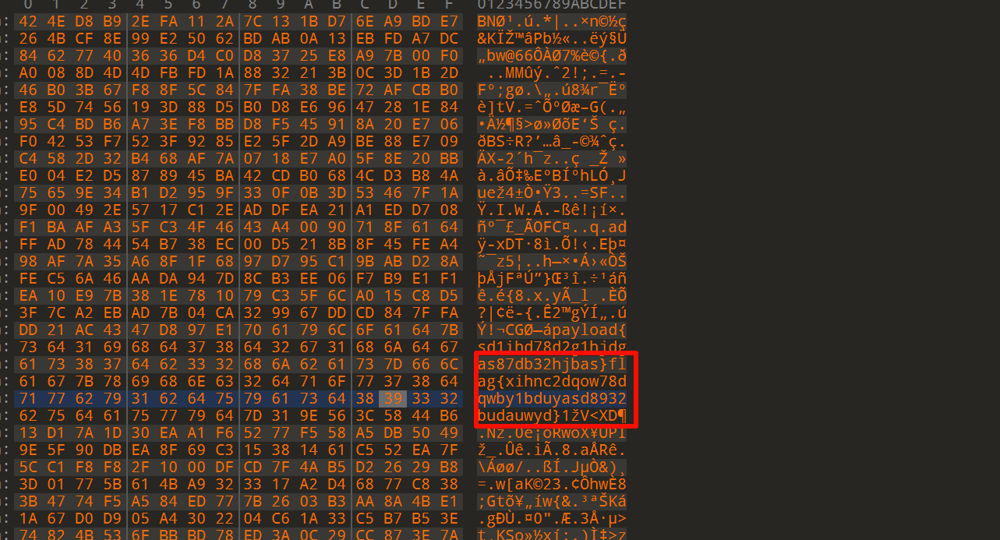
WiFi抓包 搜索flag字符找到以下数据包：
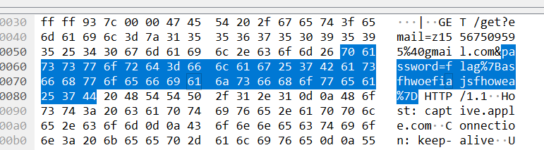
经过URL解码是flag{asfhwoefiajsfhowea}
咖啡店的虚假WiFi登录页面 需要找到：
受害者MAC地址 的前6位十六进制字符（去掉冒号）钓鱼页面域名 （不含http://）攻击者窃取到的密码 攻击时间戳 密码数据包的最后4位数字（UNIX时间戳）
第一个根据前三个数据包就能看出来了，第一个数据包是路由器周期性对外广播自己的 WiFi 信息 ，第二个是Authentication 认证帧，设备向路由器发送身份检验
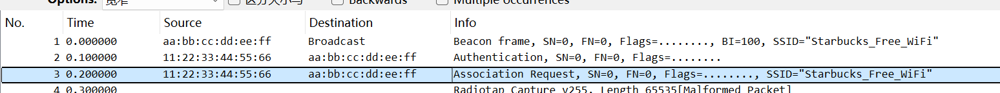
因此我的设备MAC前六位十六进制字符就是112233
第二个需要找钓鱼页面域名：
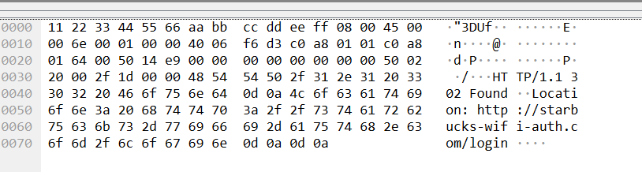
攻击者窃取的密码在下图找到了：
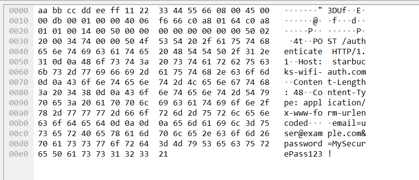
时间戳就是上图的数据包的时间戳，在左侧分组详情查看即可
最终答案：flag{112233_starbucks-wifi-auth.com_MySecurePass123!_8000}
EasyRouter
某校园物联网实验室部署了一批入门级教学路由器（型号：EasyRouter-100），用于学生实践嵌入式设备配置与安全测试。为方便教师验证学生的固件分析能力，实验室技术人员通过 Flashrom 工具 读取了路由器 NOR Flash 芯片（型号 W25Q16JV，2MB 容量）的完整镜像，将通关验证 Flag 隐藏在固件文件系统中。
题目给了一个附件，binwalk提取固件得到flag.txt,内容如下：Q1RG{ZWFzeV9mbGFzaF8yMDI0}
BASE64解码即可，结果是flag{easy_flash_2024}
WiFi协议 题目只给了一个流量包，一个个找在这里发现了关键信息，疑似是flag
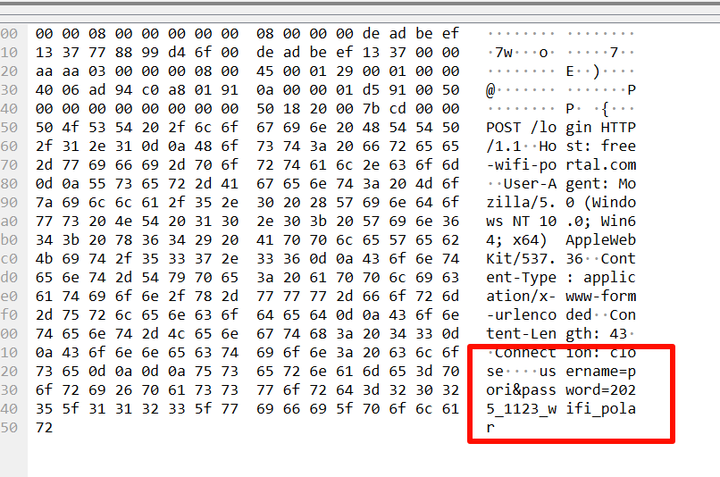
结果是flag{2025_1123_wifi_polar}
透明的无线电 题目给了一个txt文本和一个C程序源码
C源码如下：
1 2 3 4 5 6 7 8 9 10 11 12 13 14 15 16 #include <lorawan.h> uint8_t DEV_ADDR[4 ] = { 0x00 , 0x33 , 0x01 , 0x26 };uint8_t NWK_S_KEY[16 ] = { 0x00 }; uint8_t APP_S_KEY[16 ] = { 0x2B , 0x7E , 0x15 , 0x16 ,0x28 , 0xAE , 0xD2 , 0xA6 ,0xAB , 0xF7 , 0x15 , 0x88 ,0x09 , 0xCF , 0x4F , 0x3C };
题目给的txt文件经过base解码和16进制，应该是协议报文：
1 40 00 33 01 26 00 05 00 01 d7 6b 07 06 5d 45 c9 bc d0 66 06 ca 11 40 4f 44 4b 9a 3b 93 31 aa bb cc dd
按 LoRaWAN 拆字段后：
40：MHDR，表示这是一个 uplink 数据帧00 33 01 26：DevAddr，小端表示，正好是 0x26013300(在C源码表示地址)00：FCtrl05 00：FCnt = 501：FPort = 1后面一段是 FRMPayload
最后 aa bb cc dd 看起来是 MIC
刚开始题目附件上错了，flag计算的是错误的，但是到这里的思路是对的
接下来就是解密FRMPayload
LoRaWAN 的 FRMPayload 不是直接 AES-CBC 那种解法，而是AES-128 的流式异或解法。Ai 块，然后：
1 Si = aes128_encrypt(AppSKey, Ai)
最后：
FRMPayload = d76b07065d45c6bbd30d0edf7f4d182c409e78c67e29d4d99fc960a60f27919a1a04eec98263
因为是 uplink，所以 Dir = 0。
对应的 Ai 和 Si：
1 2 3 4 5 6 7 8 A1 = 01000000000000330126050000000001 S1 = b10766612623a5ddb7396fb94e29211b A2 = 01000000000000330126050000000002 S2 = 23ff49f64c11b0b8aafd04c73e15a8af A3 = 01000000000000330126050000000003 S3 = 2232d6aab51edf927e8cd833a210c730
把 FRMPayload 和 S1|S2|S3 按长度逐字节异或，得到明文：
1 666c61677b66636664346166316439376361313032386461353464613132393538363863377d
转 ASCII 就是：
1 flag{fcfd4af1d97ca1028da54da1295868c7}
exp
1 2 3 4 5 6 7 8 9 10 11 12 13 14 15 16 17 18 19 20 21 22 23 24 25 26 27 28 29 30 31 import base64from cryptography.hazmat.primitives.ciphers import Cipher, algorithms, modesappskey = bytes .fromhex("2B7E151628AED2A6ABF7158809CF4F3C" ) pkt = base64.b64decode("QAAzASYABQAB12sHBl1FxrvTDQ7ff00YLECeeMZ+KdTZn8lgpg8nkZoaBO7JgmPerb7v" ) devaddr = pkt[1 :5 ] fcnt = int .from_bytes(pkt[6 :8 ], "little" ) frmpayload = pkt[9 :-4 ] direction = 0 cipher = Cipher(algorithms.AES(appskey), modes.ECB()) enc = cipher.encryptor() keystream = b"" for i in range (1 , (len (frmpayload) + 15 ) // 16 + 1 ): Ai = ( b"\x01\x00\x00\x00\x00" + bytes ([direction]) + devaddr + fcnt.to_bytes(4 , "little" ) + b"\x00" + bytes ([i]) ) Si = enc.update(Ai) print (f"A{i} = {Ai.hex ()} " ) print (f"S{i} = {Si.hex ()} " ) keystream += Si plaintext = bytes (a ^ b for a, b in zip (frmpayload, keystream)) print (plaintext.decode())
中等 你会伪造吗 附件是一个gpx文件，看来是要篡改gpx文件伪造运动轨迹
基准对齐（Base Alignment） ：按原顺序包含 base.gpx 的 101 个原始点，未修改任何原始坐标。
点数要求 ：在原有点中插入了 2 个 CP 打卡点，并在末尾插入了 3 个占位点，总计正好 106 个点。
速度要求 ：时间戳从 09:00:00 开始，以严格的 6秒/点 均匀递增，直到 09:10:30 结束，完美满足最高速度要求。
这个真的不太了解，用gemini跑的
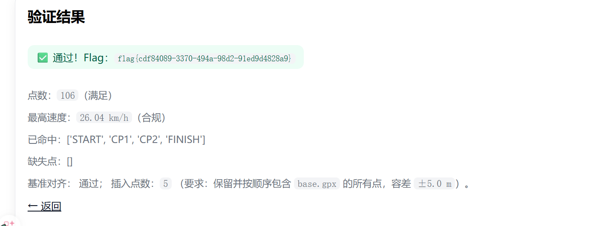
智能盆栽固件分析 binwalk提取，找到隐藏的脚本：
1 2 3 4 5 6 7 8 9 10 11 12 13 14 15 16 17 18 19 20 21 22 23 24 25 26 27 28 29 30 31 32 33 34 35 36 37 38 39 40 41 42 43 44 45 46 #!/bin/bash echo "" echo "╔══════════════════════════════════════════╗" echo "║ SECRET GARDEN ACCESS ║" echo "║ AUTHENTICATED ║" echo "╚══════════════════════════════════════════╝" echo "" echo "[🔓] Backdoor authentication: OK" echo "[🚀] Privilege escalation: OK" echo "[📁] Accessing secure partition..." echo "" sleep 1if [ -f /etc/plantpal_secret ]; then SECRET_KEY=$(cat /etc/plantpal_secret) echo "[✓] Secret key loaded: (hidden)" else SECRET_KEY="DEFAULT_KEY_BACKDOOR_123" echo "[⚠] Using default secret key" fi DEVICE_ID="PP-2024-" MD5_HASH=$(echo -n "$SECRET_KEY " | md5sum | awk '{print $1}' ) MD5_PREFIX=$(echo "$MD5_HASH " | cut -c1-8) FLAG="flag{${DEVICE_ID} ${MD5_PREFIX} }" echo "" echo "════════════════════════════════════════════" echo " 🏴 FLAG: $FLAG " echo "════════════════════════════════════════════" echo "" echo "[📝] Debug Information:" echo " Device ID: $DEVICE_ID " echo " Secret Key MD5: $MD5_HASH " echo " MD5 Prefix (8 chars): $MD5_PREFIX " echo "" echo "[⚠️] Security Notice:" echo " This backdoor will be removed in v1.1.0" echo " Please secure your devices in production" echo ""
以及一个秘密钥匙：MY_SECRET_BACKDOOR_KEY_1337
加密算法就是md5密钥取前八位再加上DEVICE-ID
我的flash 提示说厂商为了防止被直接扫描，采用了“多段分散 + 简单混淆”的方式存储敏感信息。
010打开，里面有大量的0XFF，那也就是说不是0XFF的很有可能是加密数据，甚至是密钥都是简单一字节，加密方式是异或
猜测有了，接下来就是开始答题
由于0XFF太多，让AI提取出不同位置的信息，如下：
第一段，0x2000 处按 0x4B 异或后：FLAG{flashro
第二段，0x3F00 处按 0xFF 异或后：_zlib_not}
第三段，0x9000 处是 zlib，解压后：om_segmented_xor
答案：FLAG{flashroom_segmented_xor_zlib_not}
智能门锁协议分析 固件里面可以直接看到key：
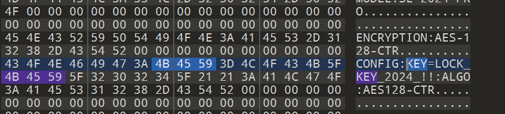
AES加密模式也给了。但是在这个固件之中，counter值是从1开始
下面是AI生成的exp：
1 2 3 4 5 6 7 8 9 10 11 12 13 14 15 16 17 18 19 20 21 22 23 24 25 26 27 28 29 30 31 32 33 34 35 36 37 38 39 40 41 42 43 44 45 46 47 48 49 50 51 52 53 54 55 56 57 58 59 60 61 62 63 64 65 66 67 68 69 70 71 72 73 74 75 76 77 78 79 80 81 82 83 84 85 86 87 88 89 90 91 92 93 94 95 96 97 98 99 100 101 102 103 104 105 106 107 108 109 110 111 112 113 from cryptography.hazmat.primitives.ciphers import Cipher, algorithms, modeskey = b"LOCK_KEY_2024_!!" records = [ { "desc" : "管理员开锁记录" , "nonce" : "72c4e915062c70d3" , "ciphertext" : "336b1e563c51bfa1b965307190596c76b406a86dd6ac38022450f4b248f65382d9c6a67a002f164aa6222d1b11ddd050462fe827139cf7365425a56c33eaab7e2504d2e5c567eff95687bed9f198dbbc" }, { "desc" : "用户开锁记录" , "nonce" : "a624068b03d3effb" , "ciphertext" : "3f5f193d2aa20ece3bd76457245ede0851db9925684be457b4ef62563350ee9b6efee2a31f10992c5a64796fd611227591cee2f27362b6c6c8f33451576cf1d9a2385ac463b38ace677741ad5ad01268" }, { "desc" : "失败尝试记录" , "nonce" : "634e44a002b69715" , "ciphertext" : "847d0c34d459eb05d062ff78901cf48fa2208459fe6ca4d6d4bc3452ff1e333bd8b66d209c84360634ac01df01aa981b919006eb87c1e95a2cb4206229f871b6a32ac26c2ecdc922fc3064119c3b1591" } ] def remove_pkcs7_padding (data: bytes ) -> bytes : if len (data) == 0 : return data pad_len = data[-1 ] if pad_len < 1 or pad_len > 16 : return data if data[-pad_len:] != bytes ([pad_len]) * pad_len: return data return data[:-pad_len] def aes_ctr_decrypt (key: bytes , nonce_hex: str , ciphertext_hex: str ) -> bytes : nonce = bytes .fromhex(nonce_hex) ciphertext = bytes .fromhex(ciphertext_hex) counter_start = (1 ).to_bytes(8 , "big" ) iv = nonce + counter_start cipher = Cipher(algorithms.AES(key), modes.CTR(iv)) decryptor = cipher.decryptor() plaintext = decryptor.update(ciphertext) + decryptor.finalize() return plaintext admin_plaintext = None for i, record in enumerate (records, 1 ): plaintext = aes_ctr_decrypt(key, record["nonce" ], record["ciphertext" ]) plaintext = remove_pkcs7_padding(plaintext) text = plaintext.decode("utf-8" , errors="replace" ) print (f"记录{i} - {record['desc' ]} " ) print (text) print ("-" * 60 ) if record["desc" ] == "管理员开锁记录" : admin_plaintext = text if admin_plaintext: parts = admin_plaintext.split() door = None time_str = None for part in parts: if part.startswith("DOOR:" ): door = part.split(":" , 1 )[1 ] elif part.startswith("TIME:" ): time_str = part.split(":" , 1 )[1 ] if door and time_str: flag = f"flag{{{door} _{time_str} }}" print ("最终 flag =" , flag) else : print ("管理员记录解出来了，但没有成功提取 DOOR 或 TIME" ) else : print ("没有找到管理员记录" )
私钥解密 提取一下文件系统
找到一个提示文本，说密码在2025年中秋节（6）
一个文件夹内有10个脚本，应该有一个对应6，执行了以下命令：openssl enc -des3 -nosalt -salt -in data.txt -out data.enc -k pass123
但是这个执行完报错，不是密码
密码经过尝试应该是123456才对
然后用RSA私钥解密
exp：
1 2 3 4 5 6 7 8 9 10 11 12 13 14 from pathlib import Pathfrom cryptography.hazmat.primitives import serializationfrom cryptography.hazmat.primitives.asymmetric import paddingpem = Path("private_key_encrypted.pem" ).read_bytes() enc = Path("flag.enc" ).read_bytes() private_key = serialization.load_pem_private_key( pem, password=b"123456" ) plaintext = private_key.decrypt(enc, padding.PKCS1v15()) print (plaintext.decode())
easy壳 壳逻辑在 FileUtils.splitPayLoadFromDex 里：读取 APK 的 classes.dex，整体 xor 0xff，末尾 4 字节是原始 dex 长度，然后从尾部切出真实 dex。
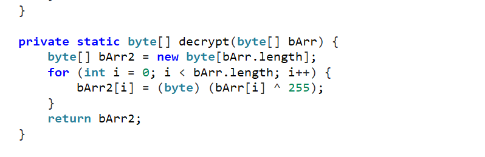
找到真逻辑如下：
1 2 3 4 5 6 7 8 9 10 11 12 13 14 15 16 17 18 19 20 21 22 23 24 25 26 27 28 29 30 package com.example.iot2;import android.os.Bundle;import android.view.View;import android.widget.EditText;import android.widget.Toast;import androidx.appcompat.app.AppCompatActivity;public class MainActivity extends AppCompatActivity { private final String CORRECT_PWD = "adsbu32cais" ; private final String FLAG = "flag{sadbuy12368gdsabhu}" ; private EditText et_pwd; @Override protected void onCreate (Bundle bundle) { super .onCreate(bundle); setContentView(R.layout.activity_main); this .et_pwd = (EditText) findViewById(R.id.et_password); } public void checkPassword (View view) { if (this .et_pwd.getText().toString().trim().equals("adsbu32cais" )) { Toast.makeText(this , "flag{sadbuy12368gdsabhu}" , 1 ).show(); } else { Toast.makeText(this , "密码错误，请重试！" , 0 ).show(); } } }
明文flag已经给出
固件锁匠 先说一个解法：010打开内部出现明文flag
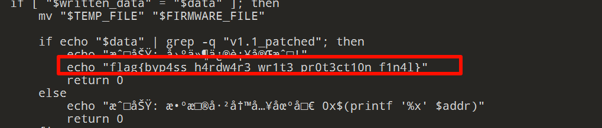
按照题目要求，我们应该找到这个代码的后门在哪里
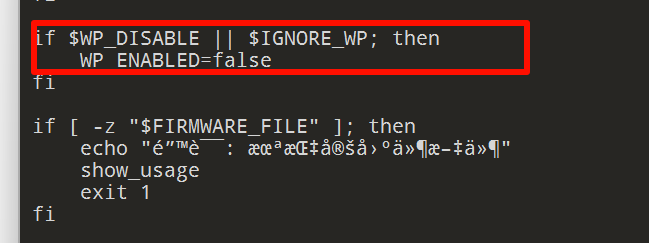
也就是说，只要传入指定参数，就可以绕过保护，命令如下所示
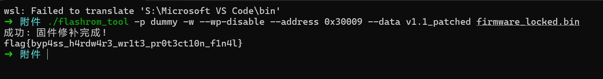
LoRaWAN网络安全审计 这是一个py打包的exe
实际上解包反编译就出来了
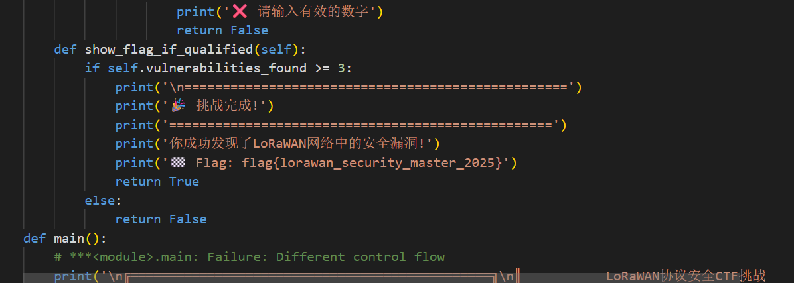
困难 有些题目看描述说是需要ESP32板子，就作罢了。只写了一些简单的
ApK47突突突 直接手撕so文件
通过JNI_ONload函数发现关键代码：
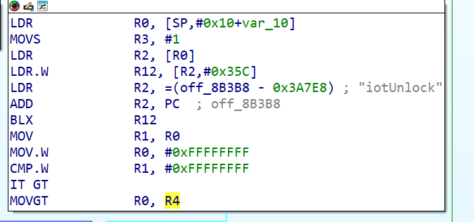
这是密文
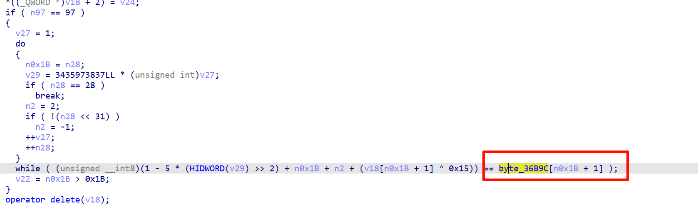
说白了反向逻辑就是 ((byte_36B9C[i + 1] - mod5 - n2)
exp：
1 2 3 4 5 6 7 8 9 10 11 12 13 14 byte_36B9C = [ 0x76 , 0x65 , 0x82 , 0x76 , 0x6B , 0x7D , 0x77 , 0x66 , 0x83 , 0x77 , 0x80 , 0x74 , 0x82 , 0x76 , 0x84 , 0x73 , 0x81 , 0x75 , 0x83 , 0x24 , 0x23 , 0x21 , 0x26 , 0x23 , 0x28 , 0x73 , 0x81 , 0x22 , 0x27 ] flag = "flag{a" for i in range (28 ): n2 = -1 if (i % 2 == 0 ) else 2 mod5 = (i + 1 ) % 5 char_val = ((byte_36B9C[i + 1 ] - mod5 - n2) & 0xFF ) ^ 0x15 flag += chr (char_val) flag += "}" print (flag)
appreverse 检验逻辑应该在so层
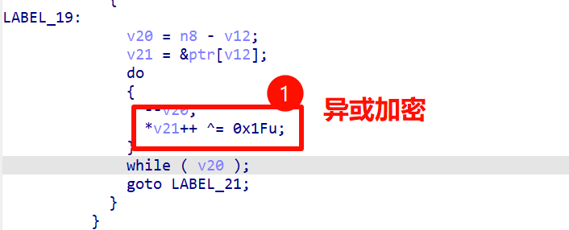
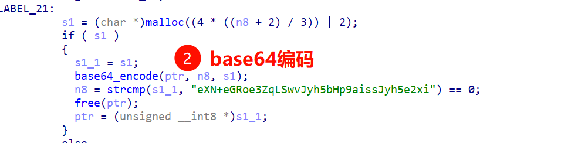
厨子解决：
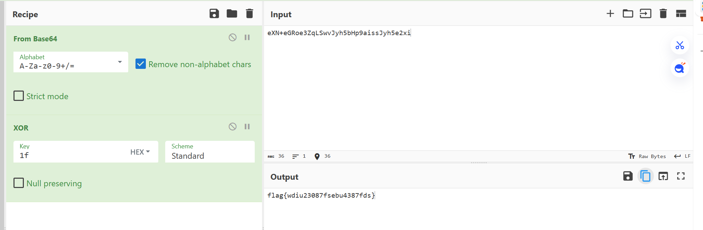
最终答案：flag{wdiu23087fsebu4387fds}